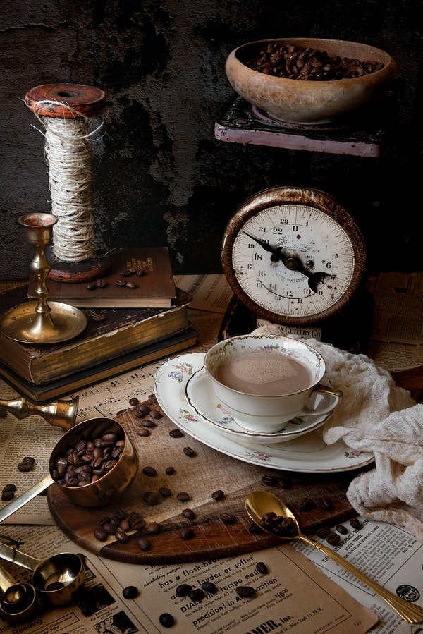

Our story...
Located in Ealing Broadway, London, Treehouse Coffee Lab is SCA
(Speciality Coffee Association) certified training centre. We offer a
wide variety of courses that cover everything from how to brew a
better cup of coffee at home to how to set up your own coffee shop,
and all our trainers are industry professionals who use their
experience and insight to ensure that everyone who attends has a
bloody good, educational time.
At Treehouse Coffee School, we believe in not only providing our
students with excellent hands-on experience but also in immersing them
in all the different aspects of the coffee trade, from grower to
roaster to barista to cup. Founded in 2015 by Edwin and Magda
Harrison, Artisan Coffee School has quickly grown into one of Europe’s
leading providers of quality coffee education – and we’re not slowing
down anytime soon.
